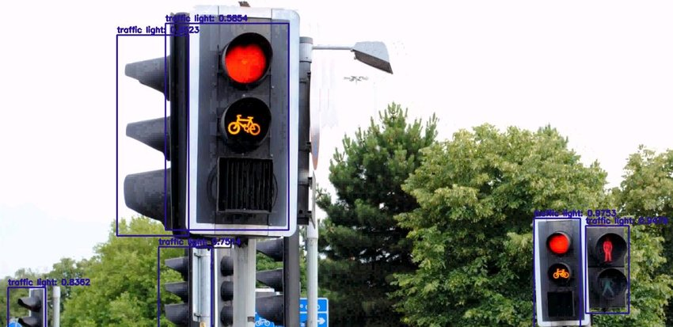

This project aims to enhance urban traffic management by developing a deep learning system for real-time traffic signal detection.
Approach
We developed a deep learning model utilizing convolutional neural networks (CNNs) trained on a diverse dataset of traffic signal images. The model was designed to identify and classify traffic signals in real-time from video feeds. We implemented data augmentation techniques to enhance model robustness and used transfer learning to improve accuracy.
Results
The model achieved an accuracy of 95% in detecting traffic signals in various conditions (day/night, different weather). Real-time implementation demonstrated a reduction in response times by 30%, contributing to improved traffic flow and safety at intersections.